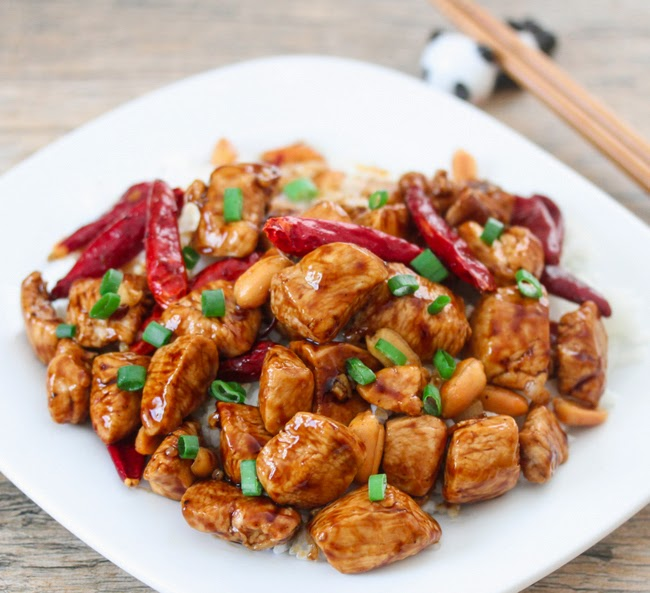

Gong Bao Chicken
Ingredients
- Boneless skinless chicken breast
- Soy sauce (or tamari)
- Vinegar (rice vinegar or sherry vinegar)
- Cornstarch
- Granulated sugar
- Toasted sesame oil
- Red & green bell peppers
- Green onions
- Cashews
- Dried red chili peppers
- Fresh garlic & ginger
How to Make this Gong Bao Chicken
- Make the Kung Pao sauce: mix the soy sauce, vinegar and sugar in a bowl.
- Prep the chicken! Cut the boneless, skinless chicken breast into uniform strips.
This is a little easier to do if your chicken is slightly frozen.
Then, toss it in a little soy sauce and cornstarch to coat.
- Cook the chicken until crispy! Working in batches so as not to overcrowd the pan,
stir-fry the chicken pieces in sesame oil until they're cooked through and gorgeously crispy.
- Stir-fry! Stir-fry the bell peppers until they're a little soft.
Then add the scallions, cashews, ginger, garlic, and dried chili peppers.
Stir fry all of that for a minute or two, and then stir in the Gong Bao sauce and cooked chicken.
- Simmer. Let all of the flavors meld over the heat for a few more minutes.
The Gong Bao sauce will thicken slightly and really coat the veggies and chicken, which is what you want.
- Serve! We love to serve this over steaming bowls of white or brown rice.